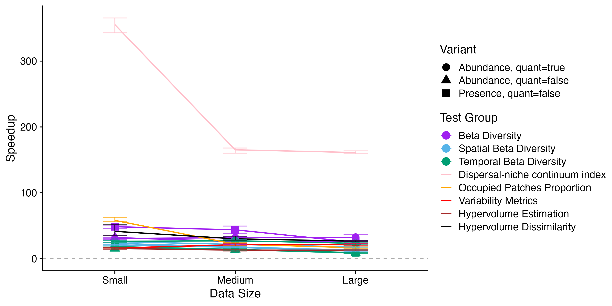

Benchmark Results
Computational Resources
All benchmarks were performed on the same machine to ensure consistent comparisons.
- CPU: Apple M4
- Number of Cores: 10
- Memory: 16GB RAM
- Operating System: macOS Sequoia 15.5
- Julia Version: 1.10.9
- R Version: 4.4.2
Benchmarking Methods
To assess the efficiency of MetaCommunityMetrics compared to equivalent R implementations, we benchmark our functions against their R counterparts, focusing on execution time and memory usage. The following tables summarize the benchmark results based on 100 samples each.
We tested using datasets of three sizes:
- Small (5,325 observations)
- Medium (26,676 observations)
- Large (53,352 observations)
The large dataset is the sample data included with MetaCommunityMetrics, accessible via load_sample_data(). The small and medium datasets can be accessed here.
Each function was benchmarked using 100 samples in both BenchmarkTools.jl in Julia and bench::mark() in R to ensure robust statistical sampling. For memory usage comparisons:
- In
Julia, we report thememory estimatefromBenchmarkTools.jl, which measures bytes allocated during the trial with minimum elapsed time - In
R, we report themem_allocmetric frombench::mark(), which tracks R heap allocations
According to documentation, the Julia metric measures total memory allocation during execution, while the R metric specifically tracks heap allocations within the R runtime, excluding "memory allocated outside the R heap, e.g., by malloc() or new directly." Due to differences in language implementation and measurement methodology, direct numerical comparisons between languages should be interpreted with caution.
Speedup Summary
Below is a plot showing the speedup of all benchmarked functions across the three datasets (small, medium and large). Speedup is calculated as the R median execution time divided by the Julia median execution time. 
Benchmark Results in Details
All times are in millisecond (ms), and memory is in mebibytes (MiB). All values are rounded up to 4 decimal places.
Median Execution time and Speedup Values
95% confidence interval is reported.
| TestCase | DataSize | Julia | R | Speedup | Lower CI | Upper CI |
|---|---|---|---|---|---|---|
| Beta Diversity (Abundance, quant=true) | Large | 0.1332 | 6.8050 | 51.0938 | 46.0584 | 59.6053 |
| Beta Diversity (Abundance, quant=true) | Medium | 0.0687 | 1.7037 | 24.8104 | 23.7951 | 26.4403 |
| Beta Diversity (Abundance, quant=true) | Small | 0.0378 | 0.8601 | 22.7582 | 22.1714 | 23.3134 |
| Beta Diversity (Abundance, quant=false) | Large | 0.0161 | 0.5129 | 31.8096 | 28.0982 | 36.0654 |
| Beta Diversity (Abundance, quant=false) | Medium | 0.0132 | 0.2969 | 22.4750 | 19.1053 | 31.1664 |
| Beta Diversity (Abundance, quant=false) | Small | 0.0078 | 0.2240 | 28.6672 | 27.7737 | 29.5725 |
| Beta Diversity (Presence, quant=false) | Large | 0.0159 | 0.4326 | 27.1801 | 20.3634 | 29.6098 |
| Beta Diversity (Presence, quant=false) | Medium | 0.0087 | 0.3029 | 34.7803 | 32.0119 | 37.0358 |
| Beta Diversity (Presence, quant=false) | Small | 0.0053 | 0.2071 | 39.2886 | 37.7791 | 40.5336 |
| Spatial Beta Diversity (Abundance, quant=true) | Large | 1.1301 | 17.3249 | 15.3307 | 14.1380 | 15.9187 |
| Spatial Beta Diversity (Abundance, quant=true) | Medium | 0.8479 | 17.4797 | 20.6148 | 19.6212 | 21.4655 |
| Spatial Beta Diversity (Abundance, quant=true) | Small | 0.6572 | 14.4239 | 21.9480 | 21.1839 | 22.7546 |
| Spatial Beta Diversity (Abundance, quant=false) | Large | 1.0138 | 9.2468 | 9.1206 | 8.7479 | 9.6145 |
| Spatial Beta Diversity (Abundance, quant=false) | Medium | 0.7158 | 8.8371 | 12.3463 | 11.6556 | 13.0150 |
| Spatial Beta Diversity (Abundance, quant=false) | Small | 0.5371 | 8.9782 | 16.7153 | 15.9690 | 17.8744 |
| Spatial Beta Diversity (Presence, quant=false) | Large | 1.0038 | 7.5462 | 7.5176 | 7.3529 | 7.5938 |
| Spatial Beta Diversity (Presence, quant=false) | Medium | 0.7014 | 11.9757 | 17.0751 | 16.2746 | 17.7219 |
| Spatial Beta Diversity (Presence, quant=false) | Small | 0.5451 | 7.4844 | 13.7301 | 13.4087 | 14.0756 |
| Temporal Beta Diversity (Abundance, quant=true) | Large | 4.7010 | 58.8296 | 12.5143 | 12.0617 | 12.9186 |
| Temporal Beta Diversity (Abundance, quant=true) | Medium | 4.1895 | 62.1943 | 14.8452 | 14.0887 | 15.7936 |
| Temporal Beta Diversity (Abundance, quant=true) | Small | 3.9819 | 69.2164 | 17.3830 | 16.2700 | 18.3625 |
| Temporal Beta Diversity (Abundance, quant=false) | Large | 1.9144 | 10.0294 | 5.2390 | 5.0630 | 5.4404 |
| Temporal Beta Diversity (Abundance, quant=false) | Medium | 1.2866 | 15.1388 | 11.7668 | 11.0312 | 12.3956 |
| Temporal Beta Diversity (Abundance, quant=false) | Small | 1.0581 | 13.0653 | 12.3481 | 11.6968 | 13.2043 |
| Temporal Beta Diversity (Presence, quant=false) | Large | 1.8345 | 13.0043 | 7.0887 | 6.6052 | 7.4926 |
| Temporal Beta Diversity (Presence, quant=false) | Medium | 1.2635 | 13.5745 | 10.7438 | 10.2363 | 11.2036 |
| Temporal Beta Diversity (Presence, quant=false) | Small | 1.0301 | 14.3504 | 13.9304 | 13.1661 | 14.5811 |
| Dispersal-niche continuum index | Large | 148.1271 | 6717.4989 | 45.3496 | 45.0784 | 45.8680 |
| Dispersal-niche continuum index | Medium | 55.4244 | 2357.6503 | 42.5381 | 41.3881 | 43.1984 |
| Dispersal-niche continuum index | Small | 12.9935 | 1948.9892 | 149.9977 | 146.3496 | 151.5726 |
| Occupied Patches Proportion | Large | 0.9207 | 12.5828 | 13.6668 | 13.0330 | 14.1296 |
| Occupied Patches Proportion | Medium | 0.6746 | 12.6010 | 18.6779 | 16.8142 | 19.7831 |
| Occupied Patches Proportion | Small | 0.2059 | 10.7664 | 52.2956 | 48.2108 | 58.0372 |
| Variability Metrics | Large | 13.6071 | 191.2499 | 14.0551 | 12.9427 | 15.7516 |
| Variability Metrics | Medium | 7.5160 | 95.8380 | 12.7511 | 11.7160 | 13.7836 |
| Variability Metrics | Small | 2.5891 | 22.7299 | 8.7791 | 8.4241 | 9.3001 |
| Hypervolume Estimation | Large | 0.0037 | 0.0283 | 7.6294 | 7.4726 | 7.8041 |
| Hypervolume Estimation | Medium | 0.0032 | 0.0271 | 8.5508 | 8.4096 | 8.6861 |
| Hypervolume Estimation | Small | 0.0030 | 0.0299 | 9.9022 | 9.7850 | 10.1953 |
| Hypervolume Dissimilarity | Large | 0.0062 | 0.1311 | 21.2579 | 20.5561 | 22.3615 |
| Hypervolume Dissimilarity | Medium | 0.0053 | 0.1174 | 22.0107 | 21.4973 | 23.0606 |
| Hypervolume Dissimilarity | Small | 0.0050 | 0.1206 | 23.9282 | 23.4924 | 24.4483 |
Memory Usage
Benchmarked using Large Dataset
| TestCase | Julia | R |
|---|---|---|
| Beta Diversity (Abundance, quant=true) | 0.4346 | 0.0566 |
| Beta Diversity (Abundance, quant=false) | 0.1347 | 0.1252 |
| Beta Diversity (Presence, quant=false) | 0.1347 | 0.1252 |
| Spatial Beta Diversity (Abundance, quant=true) | 3.9185 | 3.1221 |
| Spatial Beta Diversity (Abundance, quant=false) | 3.5173 | 2.6791 |
| Spatial Beta Diversity (Presence, quant=false) | 3.5173 | 2.6791 |
| Temporal Beta Diversity (Abundance, quant=true) | 16.8838 | 16.8941 |
| Temporal Beta Diversity (Abundance, quant=false) | 5.6586 | 5.1830 |
| Temporal Beta Diversity (Presence, quant=false) | 5.6586 | 5.1830 |
| Dispersal-niche continuum index | 408.4503 | 43.9627 |
| Occupied Patches Proportion | 2.5230 | 1.8935 |
| Variability Metrics | 12.4573 | 60.0667 |
| Hypervolume Estimation | 0.0122 | 0.0022 |
| Hypervolume Dissimilarity | 0.0168 | 0.0145 |
Benchmarked using Medium Dataset
| TestCase | Julia | R |
|---|---|---|
| Beta Diversity (Abundance, quant=true) | 0.2491 | 0.0357 |
| Beta Diversity (Abundance, quant=false) | 0.1086 | 0.0798 |
| Beta Diversity (Presence, quant=false) | 0.1086 | 0.0798 |
| Spatial Beta Diversity (Abundance, quant=true) | 2.3897 | 2.2814 |
| Spatial Beta Diversity (Abundance, quant=false) | 1.9910 | 1.8384 |
| Spatial Beta Diversity (Presence, quant=false) | 1.9910 | 1.8384 |
| Temporal Beta Diversity (Abundance, quant=true) | 15.2769 | 16.2587 |
| Temporal Beta Diversity (Abundance, quant=false) | 4.1324 | 4.5476 |
| Temporal Beta Diversity (Presence, quant=false) | 4.1324 | 4.5476 |
| Dispersal-niche continuum index | 143.7430 | 17.0662 |
| Occupied Patches Proportion | 1.3019 | 1.4072 |
| Variability Metrics | 7.6746 | 32.5536 |
| Hypervolume Estimation | 0.0085 | 0.0011 |
| Hypervolume Dissimilarity | 0.0120 | 0.0077 |
Benchmarked using Small Dataset
| TestCase | Julia | R |
|---|---|---|
| Beta Diversity (Abundance, quant=true) | 0.1225 | 0.0195 |
| Beta Diversity (Abundance, quant=false) | 0.0883 | 0.0444 |
| Beta Diversity (Presence, quant=false) | 0.0883 | 0.0444 |
| Spatial Beta Diversity (Abundance, quant=true) | 1.1334 | 1.2204 |
| Spatial Beta Diversity (Abundance, quant=false) | 0.7663 | 0.7774 |
| Spatial Beta Diversity (Presence, quant=false) | 0.7663 | 0.7774 |
| Temporal Beta Diversity (Abundance, quant=true) | 12.8811 | 15.4419 |
| Temporal Beta Diversity (Abundance, quant=false) | 2.8937 | 3.7308 |
| Temporal Beta Diversity (Presence, quant=false) | 2.8937 | 3.7308 |
| Dispersal-niche continuum index | 37.7612 | 7.9752 |
| Occupied Patches Proportion | 0.3249 | 0.5009 |
| Variability Metrics | 3.8483 | 10.5805 |
| Hypervolume Estimation | 0.0059 | 0.0003 |
| Hypervolume Dissimilarity | 0.0082 | 0.0014 |
Remarks
- For
DNCI_multigroup_result, 100 permutations are used in both theJuliaandRimplementation, andparallelComputingwas set to beTRUEwhen benchmarkingDNCImper:::DNCI_multigroup()inR.